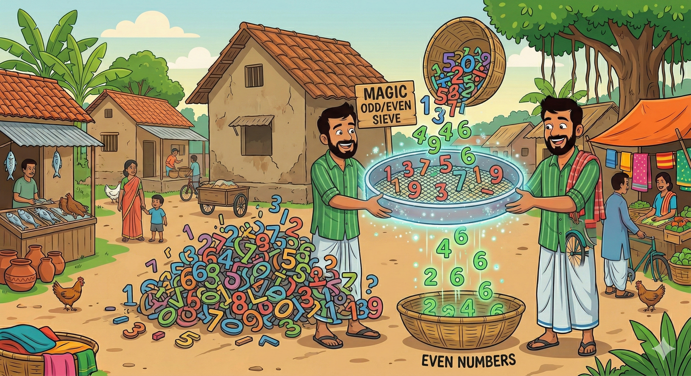
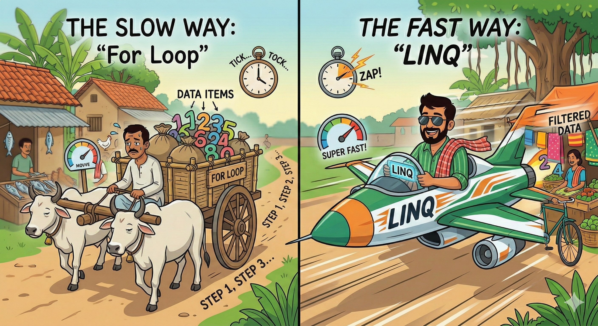

চ্যাপ্টার ৩
LINQ (লাল্টুর জাদুকরী চালনি)
(ডাটা ফিল্টারিংয়ের নিনজা টেকনিক)

"মনে কর এক বস্তা চালের মধ্যে কিছু কাঁকর আছে। একটা একটা করে বাছতে গেলে তো
দিন শেষ! LINQ হলো এমন একটা জাদুকরী চালনি (Sieve), যেটা
দিয়ে এক ঝাকুনি দিবি, আর সব কাঁকর আলাদা হয়ে যাবে। কোড হবে ছোট, কাজ হবে
রকেট গতিতে!"
Why LINQ? (জেট প্লেন বনাম গরুর গাড়ি)
লুপ (For/Foreach) লিখে ডাটা খোঁজা হলো গরুর গাড়ির মতো। LINQ হলো জেট প্লেন।

🐢 Traditional Way (বোরিং)
List<int> numbers = new List<int> { 1, 2, 3, 4, 5, 6 };
List<int> evenNumbers = new List<int>();
// গরুর গাড়ির মতো লুপ
foreach (var n in numbers) {
if (n % 2 == 0) {
evenNumbers.Add(n);
}
}
🚀 LINQ Style (স্টাইলিশ)
// এক লাইনেই কেল্লাফতে! var evenNumbers = numbers.Where(n => n % 2 == 0).ToList(); // SQL এর মতো query ও লেখা যায়: // var result = from n in numbers // where n % 2 == 0 // select n;
🧠 মগজ ধোলাই (LINQ Quiz)
মামা, LINQ ব্যবহার করলে মূল লাভটা কী?